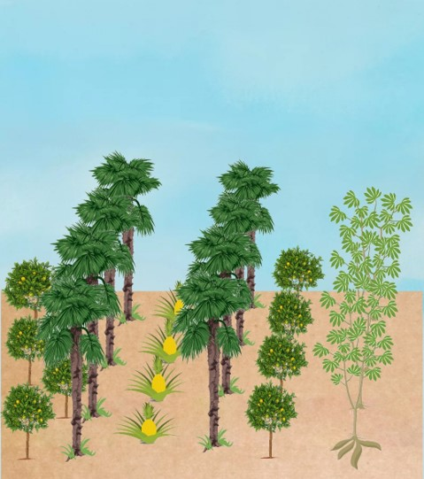

Sistemas Agroflorestais
Agroflorestas no Distrito Federal

Núcleo de Agroecologia e Produção Orgânica da Universidade de Brasília
Combinam árvores com cultivos agrícolas anuais
Projeto GAIA
Combinam árvores com cultivos agrícolas anuais

Sítio Semente
Combinam árvores e pastagens (animais)

CSA Fabiane Penereiro
Combinam árvores com cultivos agrícolas e animais

Você sabe sobre agroflorestas no Distrito Federal?
- O DF possui cerca de 7,44 SAFs/1000km²
- Lago Oeste possui a maior concentração de Agroflorestas
- Sobradinho apresenta a maior densidade, sendo possivelmente, a região do país com a maior densidade de agroflorestas
- Boa parte das agroflorestas são implantadas em áreas degradadas ou pastagens
- As espécies mais utilizadas nos sistemas agroflorestais são: Eucalipto (Eucalyptus spp.), Bananeira (Musa paradisíaca), Amoreira (Morus nigra), Mangueira (Mangifera indica), Abacateiro (Persea americana), Jaqueira (Artocarpus heterophyllus), Café (Coffea arábica), Cítricos (Citrus spp.) e Mamoeiro (Carica papaya).
- É as espécies mais difíceis de serem implantadas são: Cacau (Theobroma cacao), Cupuaçu (Theobroma grandiflorum), Açaí (Euterpe oleracea), Jussara (Euterpe edulis), Pequizeiro (Caryocar brasiliense) e Caqui (Diospyros kaki).
Referências Bibliográficas
- 1. Chacel, F. C. ESPÉCIES ARBÓREAS EM SISTEMAS AGROFLORESTAIS NO DISTRITO FEDERAL, BRASIL. Dissertação (mestrado) – Universidade de Brasília, Instituto de Ciências Biológicas, Departamento de Botânica, Programa de Pós-Graduação em Botânica, 2018. 235p.
- 2. Franke, I. L.; Lunz, A. M. P. & Amaral, E.F. METODOLOGIA PARA PLANEJAMENTO, IMPLANTAÇÃO E MONITORAMENTO DE SISTEMAS AGROFLORESTAIS: UM PROCESSO PARTICIPATIVO. Rio Branco: Embrapa Acre, 200. 32p. (Embrapa Acre. Documentos, 49).
- 3. Oliveira, L.; Barros, A. B.; Teixeira, A. L.; Campaneruti, G. & Alves, V. P. AGROFLORESTA E SEUS BENEFÍCIOS SALIENTANDO AS VANTAGENS AMBIENTAIS. IX Congresso Brasileiro de Gestão Ambiental São Bernardo do Campo/SP – 2018.
- 4. Veracidade Permacultura. SISTEMAS AGROFLORESTAIS. Youtube, 19 de abril de 2021. Disponível em: < https://www.youtube.com/watch?v=B9Om5KZ69eA> Acesso em: 03 de abril de 2022.
- 5. RAMOS, H. M. N. R; MATOS, G. C. B. SISTEMAS AGROFLORESTAIS.
- 6. ESALQ Júnior Florestal. Sistemas Agroflorestais - O que você precisa saber sobre esta forma de policultivo.